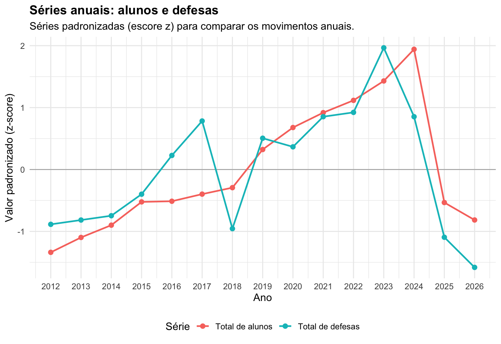
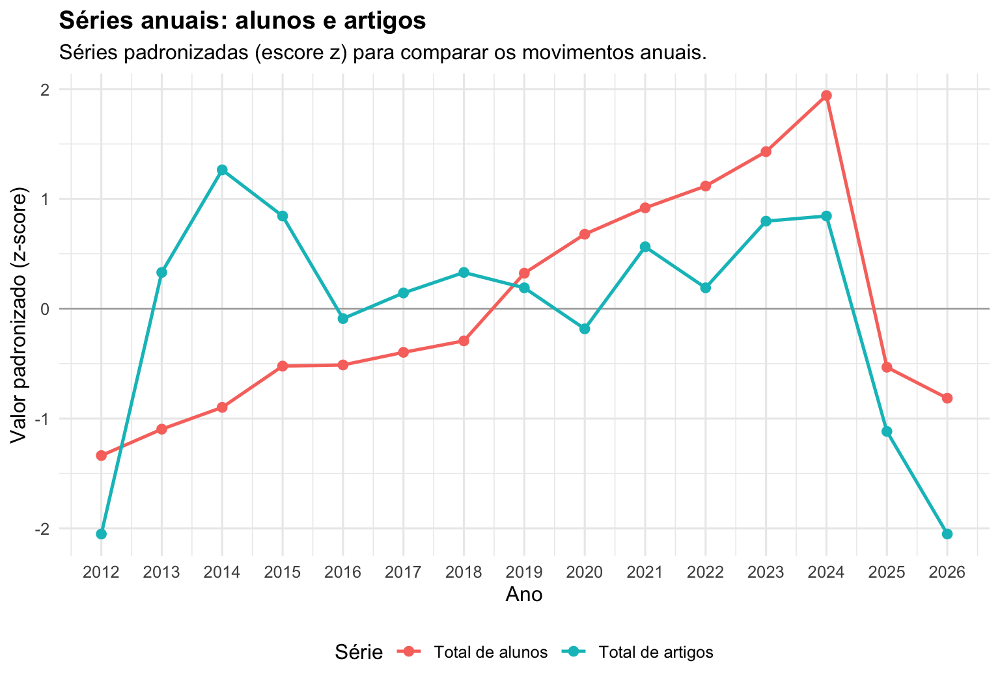
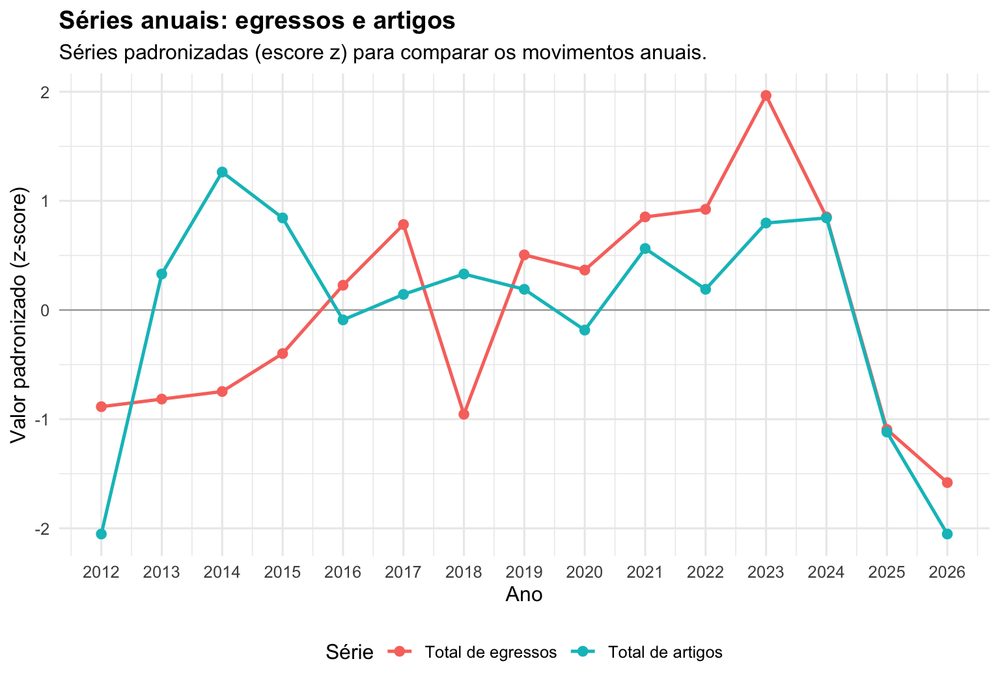
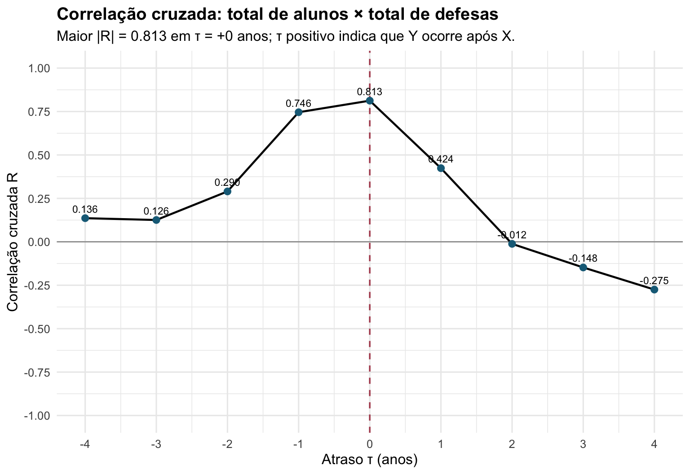
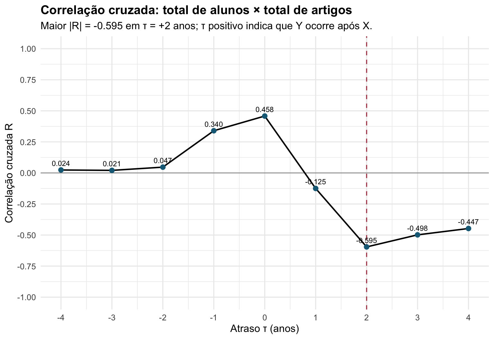
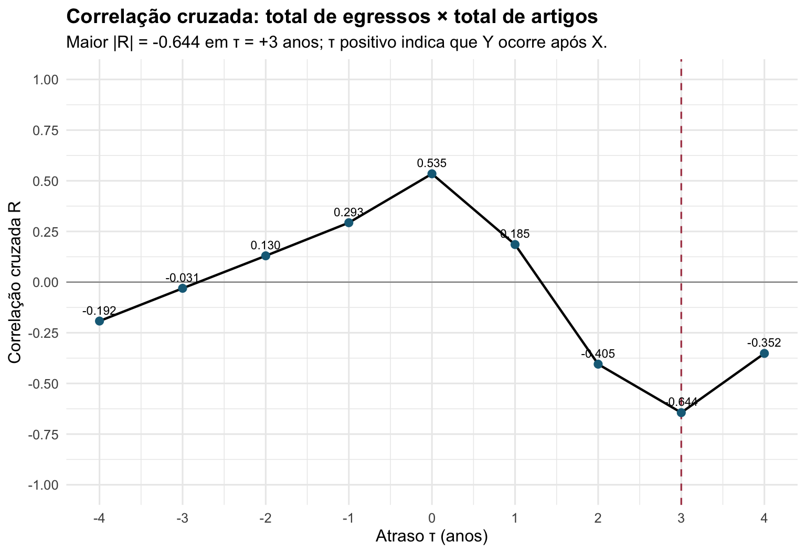
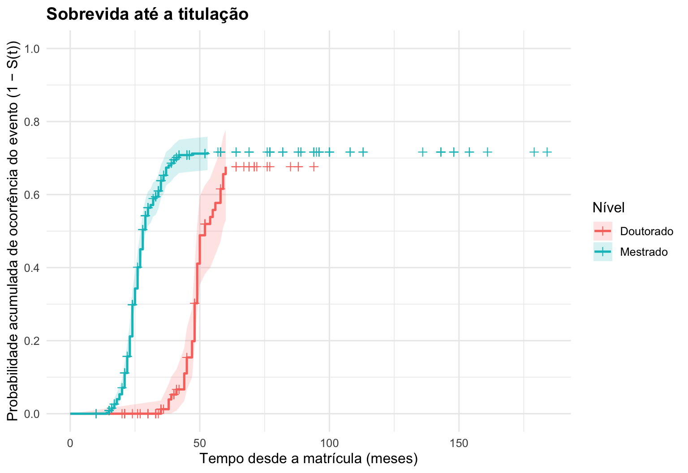
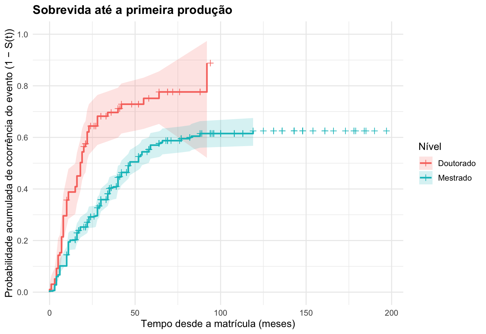
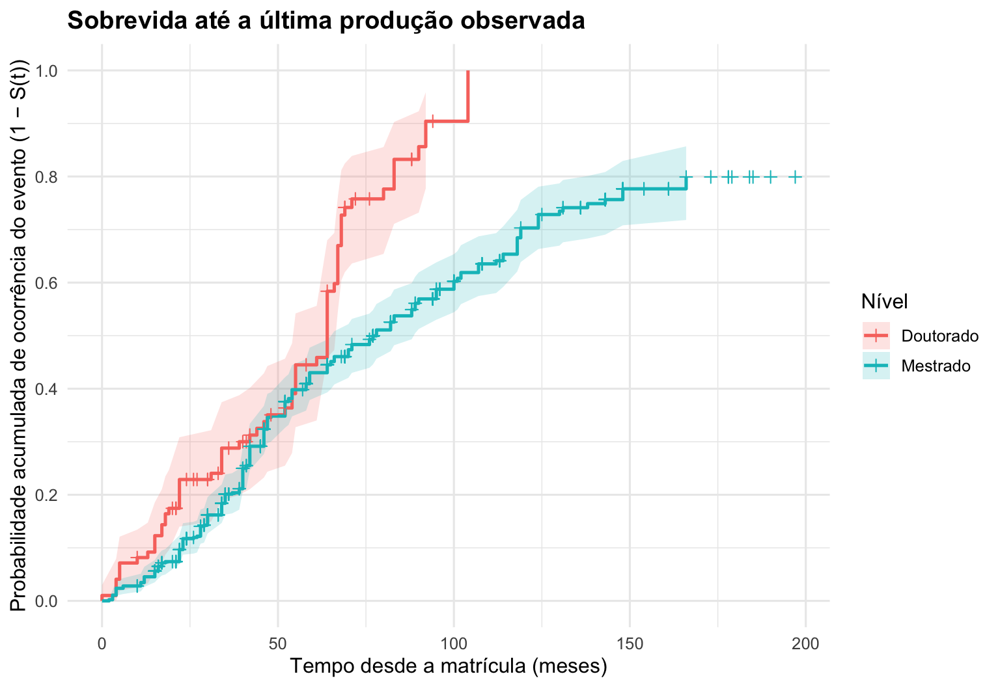

Consolidado
Consolidado
Análises
Médias estimadas por categoria e desfecho
Os modelos usam uma observação por TCC. Para Linha de Pesquisa, Nível e Sexo, as tabelas apresentam médias marginais estimadas por categoria nos modelos bruto e ajustado; a distribuição observada das demais variáveis é usada na padronização. Para idade, variável contínua, é apresentado o beta. Total de artigos e produção contam os registros vinculados a TCC atribuídos ao TCC mais recente do autor já defendido. Os modelos ajustados incluem número de docentes, número de discentes e idade do Programa.
Tempo para titulação (meses)
| Exposição | Categoria | n bruto | Média estimada (bruto) | IC 95% (bruto) | n ajustado | Média estimada (ajustado) | IC 95% (ajustado) |
|---|---|---|---|---|---|---|---|
| Linha de Pesquisa | ABORDAGEM TERAPÊUTICA EM REABILITAÇÃO | 119 | 29.755 | [28.720; 30.790] | 119 | 29.818 | [28.798; 30.839] |
| Linha de Pesquisa | AVALIAÇÃO FUNCIONAL E ATIVIDADE FÍSICA | 20 | 26.242 | [23.713; 28.772] | 20 | 27.725 | [24.896; 30.554] |
| Linha de Pesquisa | AVALIAÇÃO FUNCIONAL EM REABILITAÇÃO | 163 | 28.937 | [28.049; 29.826] | 163 | 28.662 | [27.755; 29.569] |
| Linha de Pesquisa | REABILITAÇÃO NO ESPORTE E NO ESPORTE ADAPTADO | 39 | 29.501 | [27.675; 31.327] | 39 | 29.699 | [27.889; 31.510] |
| Nível | Doutorado | 43 | 48.215 | [46.482; 49.948] | 43 | 47.802 | [46.057; 49.547] |
| Nível | Mestrado | 298 | 26.375 | [25.723; 27.027] | 298 | 26.435 | [25.791; 27.079] |
| Sexo | Feminino | 197 | 29.277 | [28.472; 30.082] | 197 | 29.167 | [28.370; 29.965] |
| Sexo | Masculino | 144 | 28.927 | [27.984; 29.870] | 144 | 29.077 | [28.140; 30.013] |
| Ajustado por número de docentes, número de discentes e idade do Programa; médias calculadas pela padronização sobre a distribuição observada das demais variáveis do modelo. |
Tempo para publicação (meses)
| Exposição | Categoria | n bruto | Média estimada (bruto) | IC 95% (bruto) | n ajustado | Média estimada (ajustado) | IC 95% (ajustado) |
|---|---|---|---|---|---|---|---|
| Linha de Pesquisa | ABORDAGEM TERAPÊUTICA EM REABILITAÇÃO | 70 | 14.129 | [10.883; 17.374] | 70 | 13.354 | [10.350; 16.358] |
| Linha de Pesquisa | AVALIAÇÃO FUNCIONAL E ATIVIDADE FÍSICA | 13 | 16.011 | [8.457; 23.566] | 13 | 8.502 | [0.055; 16.949] |
| Linha de Pesquisa | AVALIAÇÃO FUNCIONAL EM REABILITAÇÃO | 98 | 8.012 | [5.260; 10.764] | 98 | 10.014 | [7.342; 12.686] |
| Linha de Pesquisa | REABILITAÇÃO NO ESPORTE E NO ESPORTE ADAPTADO | 26 | 13.296 | [7.879; 18.713] | 26 | 11.589 | [6.547; 16.631] |
| Nível | Doutorado | 35 | 6.059 | [1.378; 10.740] | 35 | 9.110 | [4.648; 13.572] |
| Nível | Mestrado | 172 | 12.302 | [10.232; 14.372] | 172 | 11.681 | [9.761; 13.601] |
| Sexo | Feminino | 117 | 12.287 | [9.769; 14.806] | 117 | 11.916 | [9.588; 14.244] |
| Sexo | Masculino | 90 | 9.893 | [7.014; 12.772] | 90 | 10.376 | [7.712; 13.040] |
| Ajustado por número de docentes, número de discentes e idade do Programa; médias calculadas pela padronização sobre a distribuição observada das demais variáveis do modelo. |
Total de artigos
| Exposição | Categoria | n bruto | Média estimada (bruto) | IC 95% (bruto) | n ajustado | Média estimada (ajustado) | IC 95% (ajustado) |
|---|---|---|---|---|---|---|---|
| Linha de Pesquisa | ABORDAGEM TERAPÊUTICA EM REABILITAÇÃO | 119 | 0.705 | [0.513; 0.897] | 119 | 0.685 | [0.501; 0.869] |
| Linha de Pesquisa | AVALIAÇÃO FUNCIONAL E ATIVIDADE FÍSICA | 20 | 1.467 | [0.998; 1.936] | 20 | 0.780 | [0.270; 1.290] |
| Linha de Pesquisa | AVALIAÇÃO FUNCIONAL EM REABILITAÇÃO | 163 | 0.798 | [0.634; 0.963] | 163 | 0.924 | [0.760; 1.087] |
| Linha de Pesquisa | REABILITAÇÃO NO ESPORTE E NO ESPORTE ADAPTADO | 39 | 0.861 | [0.522; 1.200] | 39 | 0.752 | [0.426; 1.079] |
| Nível | Doutorado | 43 | 1.708 | [1.386; 2.029] | 43 | 1.891 | [1.577; 2.206] |
| Nível | Mestrado | 298 | 0.683 | [0.562; 0.804] | 298 | 0.657 | [0.540; 0.773] |
| Sexo | Feminino | 197 | 0.852 | [0.702; 1.001] | 197 | 0.832 | [0.688; 0.976] |
| Sexo | Masculino | 144 | 0.759 | [0.584; 0.933] | 144 | 0.785 | [0.616; 0.954] |
| Ajustado por número de docentes, número de discentes e idade do Programa; médias calculadas pela padronização sobre a distribuição observada das demais variáveis do modelo. |
Total da produção
| Exposição | Categoria | n bruto | Média estimada (bruto) | IC 95% (bruto) | n ajustado | Média estimada (ajustado) | IC 95% (ajustado) |
|---|---|---|---|---|---|---|---|
| Linha de Pesquisa | ABORDAGEM TERAPÊUTICA EM REABILITAÇÃO | 119 | 1.619 | [1.110; 2.128] | 119 | 1.664 | [1.161; 2.166] |
| Linha de Pesquisa | AVALIAÇÃO FUNCIONAL E ATIVIDADE FÍSICA | 20 | 2.519 | [1.276; 3.762] | 20 | 2.515 | [1.123; 3.907] |
| Linha de Pesquisa | AVALIAÇÃO FUNCIONAL EM REABILITAÇÃO | 163 | 2.336 | [1.900; 2.773] | 163 | 2.313 | [1.867; 2.760] |
| Linha de Pesquisa | REABILITAÇÃO NO ESPORTE E NO ESPORTE ADAPTADO | 39 | 1.747 | [0.850; 2.645] | 39 | 1.710 | [0.819; 2.601] |
| Nível | Doutorado | 43 | 3.613 | [2.761; 4.465] | 43 | 3.457 | [2.598; 4.316] |
| Nível | Mestrado | 298 | 1.801 | [1.480; 2.121] | 298 | 1.823 | [1.506; 2.140] |
| Sexo | Feminino | 197 | 2.113 | [1.718; 2.509] | 197 | 2.121 | [1.729; 2.514] |
| Sexo | Masculino | 144 | 1.915 | [1.451; 2.378] | 144 | 1.903 | [1.442; 2.364] |
| Ajustado por número de docentes, número de discentes e idade do Programa; médias calculadas pela padronização sobre a distribuição observada das demais variáveis do modelo. |
Séries temporais sobrepostas
Cada gráfico sobrepõe as duas séries anuais do par. Os valores foram padronizados em escore z para permitir a comparação dos padrões temporais, mesmo quando as contagens têm escalas diferentes.



Correlações cruzadas anuais
Cada gráfico mostra a correlação cruzada R em função do atraso temporal τ, em anos. A linha vertical tracejada marca o atraso em que |R| é maior; τ positivo indica que a série Y ocorre após a série X.



Análise de sobrevida: matrícula até titulação e produção
As curvas são estratificadas por nível (mestrado/doutorado), com uma observação por ID da Pessoa e nível. O seguimento começa na primeira matrícula registrada naquele nível e termina em 31 de dezembro do ano mais recente disponível na Sucupira. Para produção, a base informa apenas o ano; a data foi aproximada como 1º de julho. O indicador de evento vale 1 quando o evento foi observado e 0 quando o acompanhamento foi censurado. Para última produção, considera-se evento a última produção observada no período; pessoas sem produção são censuradas no fim do seguimento. A tabela abaixo de cada gráfico resume um modelo de Cox não ajustado, comparando doutorado com mestrado (HR > 1 indica maior taxa instantânea de ocorrência do evento no doutorado).

| Desfecho | N mestrado | Eventos mestrado | N doutorado | Eventos doutorado | HR (doutorado vs. mestrado) | IC 95% | p |
|---|---|---|---|---|---|---|---|
| Tempo até titulação | 463 | 298 | 98 | 43 | 0.380 | [0.275; 0.524] | 0.000 |

| Desfecho | N mestrado | Eventos mestrado | N doutorado | Eventos doutorado | HR (doutorado vs. mestrado) | IC 95% | p |
|---|---|---|---|---|---|---|---|
| Tempo até a primeira produção | 463 | 248 | 98 | 71 | 2.191 | [1.677; 2.861] | 0.000 |

| Desfecho | N mestrado | Eventos mestrado | N doutorado | Eventos doutorado | HR (doutorado vs. mestrado) | IC 95% | p |
|---|---|---|---|---|---|---|---|
| Tempo até a última produção observada | 463 | 248 | 98 | 71 | 1.896 | [1.448; 2.484] | 0.000 |
Copyright © 2021- Arthur de Sá Ferreira, DSc. Todos os direitos reservados. Última atualização em .
Observatório por  Arthur de Sá Ferreira está licenciado sob Apache License 2.0
Arthur de Sá Ferreira está licenciado sob Apache License 2.0
 Desenvolvido em
Desenvolvido em